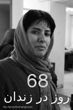

|
|

سمیه رشیدی آزاد شد
پنج شنبه6 اسفند 1388

تغییر برای برابری:سمیه رشیدی، فعال کمپین یک میلیون امضا برای تغییر قوانین تبعیض آمیز، امروز ۶ اسفند ماه از زندان
اوین آزاد شد.
این فعال حقوق زنان 29 آذر ماا جاری در پی احضار به دادگاه انقلاب بازداشت شد. ماموران امنیتی چند روز قبل از بازداشت وی با هجوم به منزل شخصی اش، وسائل شخصی وی را توقیف کردند.
طی مدت بازداشت سمیه رشیدی، مراجعات افروز مغزی و زهره ارزنی ، وکلای وی به دادگاه انقلاب بینتیجه مانده بود.
وی همچنین در سال تحصیلی جاری به دلیل ستارهدارشدن از تحصیل در مقطع کارشناسی ارشد رشته مطالعات زنان محروم شد.